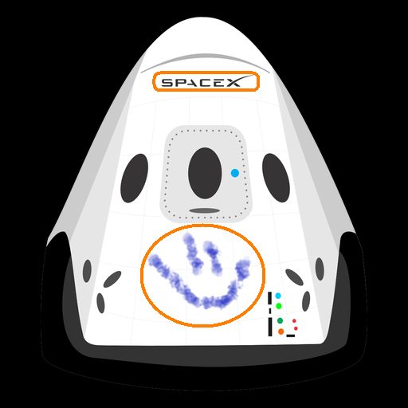

Hyper Blog
Tu blog de cabecera
Aquí inicia la historia de un gran proyecto
Y este es el párrafo de inicio donde vamos a explicar las cosas increíbles que se pueden hacer con ramas.

Los Blogs son la mejor forma de compartir información y tus ideas, mucho mas que ir a conferencias, o salir en youtube; excepto si eres rockstar. Pero estadísticamente no lo eres .......... por ahora.

Osos viajando hacia el camino de la tecnologia
Suscribete y dale like.